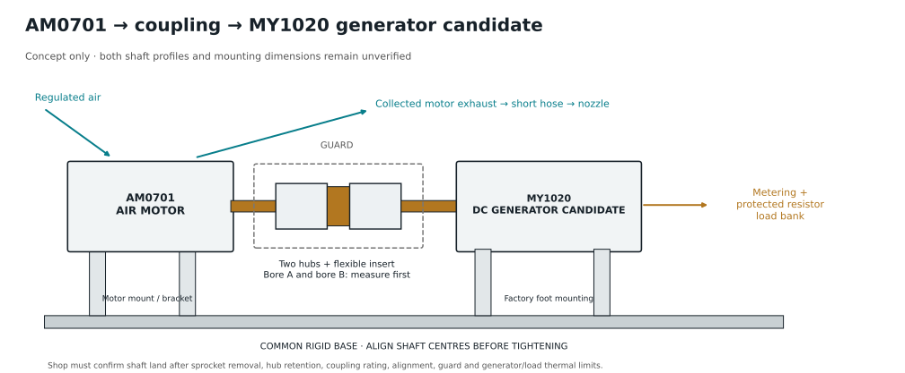

How MY1020 attaches

- Mount AM0701 using a suitable bracket and MY1020 using its foot on a common rigid base. Support both machines independently.
- If direct coupling is permitted, remove the MY1020 sprocket by its approved method. Verify that the exposed shaft has a suitable coupling land. Do not clamp an ordinary smooth-bore hub onto an unsuitable thread.
- Select two coupling hubs: one for the actual AM0701 shaft, one for the actual MY1020 shaft, plus the matching flexible insert. Confirm diameter, engagement length, key/flat/thread and retention. Both bores remain unverified; no fitted coupling SKU is specified.
- Align shaft centres and angles, set the specified hub gap, tighten per supplier instructions, and install a guard. Check continuous torque, service factor and speed rating. AM0701’s manufacturer maximum is 3 N m / 3000 rpm; 671 W at 3000 rpm would be 2.14 N m, an illustrative point.
- Connect the generator output to a properly protected and metered resistor load. Verify the generator construction, loaded voltage/current and thermal limits. The electrical load creates opposing shaft torque; open circuit supplies little sustained external load.
This remains a workshop assembly, not a ready-to-attach kit. It is an AM0701 candidate, not a qualified full-power AM0706 load. The last MY1020 delivery quote to 94107 was Prime 5 Nov, after the 4 Nov deadline. Interface status · PNG · SVG.